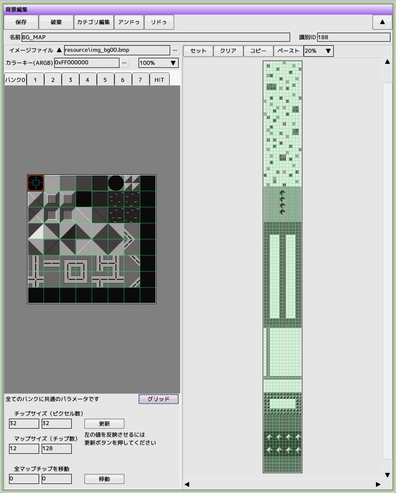

■元のページへ戻る
背景編集

■編集ウインドウ共通操作ヘルプはこちら
イメージ登録（バンク）
一枚の背景に使えるイメージは最大８枚です（パフォーマンスの点で言えば256x256のテクスチャを4枚使うのであれば512x512へまとめた方が有利です）
登録したイメージをチップ単位に分割し、マップ上に並べたものが最終的な背景となります
カラーキー
透明色へ変換するカラーをARGB32ビットで記述します
チップサイズ
１チップのサイズをピクセル単位で指定します。このチップ単位でイメージから切り出して背景マップを構成していきます
反映させるには更新ボタンを押してください
マップサイズ
マップ全体のサイズをチップ単位で指定します
反映させるには更新ボタンを押してください
マップ編集
ウインドウ内の左側に表示されているのが登録したイメージです。ここをドラッグでマップへ配置するためのチップを選択します（赤い枠が選択されたチップの周りに表示されます）
次に、右側のマップエリアの上方にあるツールボタンが「セット」になっていることを確認した後に、マップ内をドラッグします。選択したチップがマップへ配置されます
セット
左側のイメージエリアで選択したチップを右側のマップエリアへ配置します
配置先を範囲指定します
セット2
左側のイメージエリアで選択したチップを右側のマップエリアへ配置します
選択したチップをそのまま配置します
クリア
右側のマップエリアをクリア（未配置状態）にします
コピー
右側のマップエリアでコピー元の範囲をドラッグで指定してください
ペースト
右側のマップエリアでペースト先をドラッグで指定してください
ペースト2
右側のマップエリアをクリックしてください。コピーした範囲がそのままペーストされます
全マップチップを移動
マップに配置された内容を全て移動させます
ショートカットキー
カーソルキーでマップエリアを上下左右にスクロールできます
イメージエリアとマップエリアでマウスホイールで拡大縮小できます
イメージエリアとマップエリアで右ドラッグで移動できます
背景との当たり判定
マップチップサイズが32x32の時、当たり判定を付与することができます
バンク切り替えボタン0～7の右端にあるHITをクリックすると背景へ当たり判定の属性を付けるモードになります。この状態だと左側のイメージに当たり判定用のリストが表示されます。設定したい当たり判定を選択後、通常のモードと同じように右側のマップへと配置します。背景パーツが無い部分に当たり判定を配置することはできません 実際に背景とキャラクタとの当たり判定を有効にするには、
ステージ編集
で背景の当たり判定を有効にし、
キャラクタ編集
で「背景と判定有り」にチェックを入れます
■ページ上部へ戻る
 ■元のページへ戻る
■元のページへ戻る